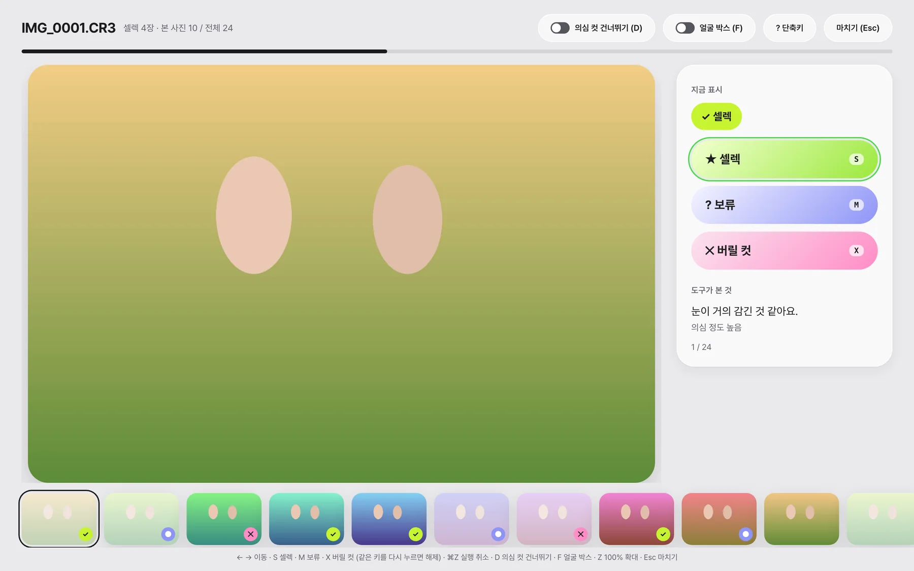
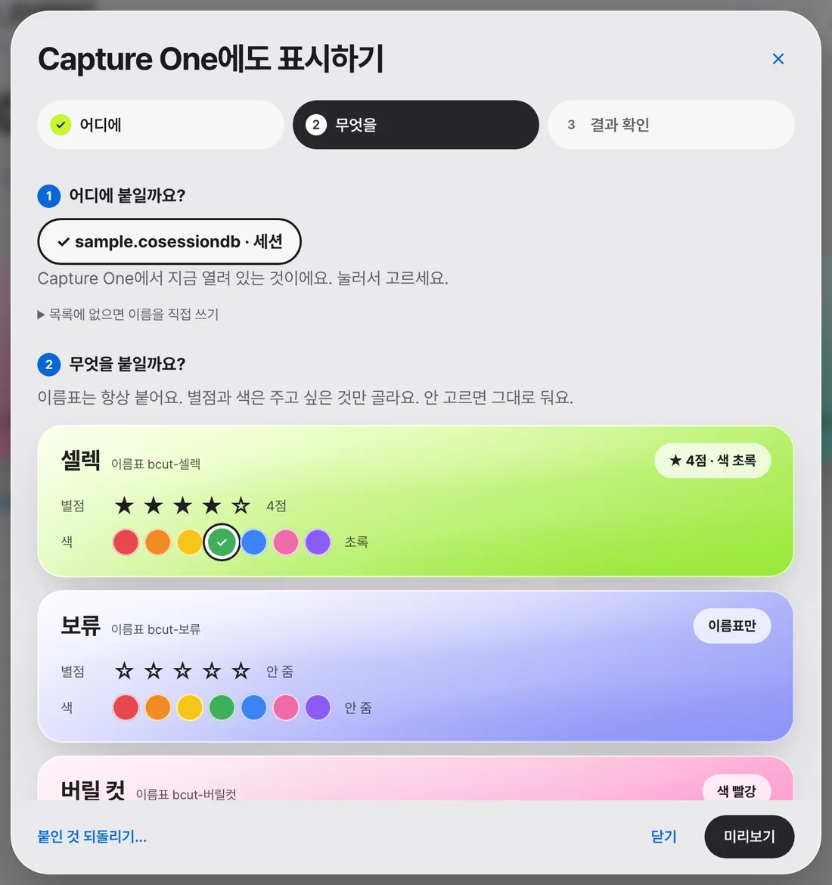
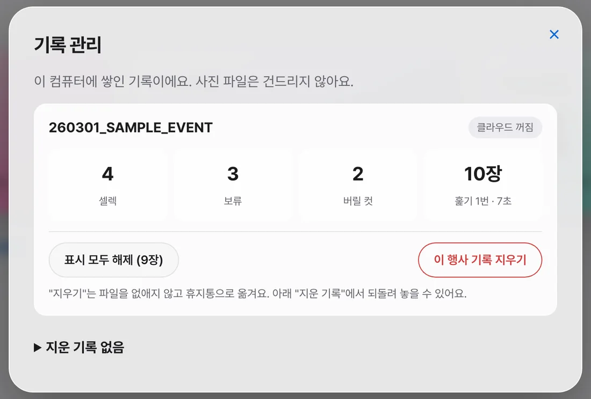

A01
CHECK
먼저 찾아 둬요
눈 감김·흔들림 의심을 이유와 함께
판정눈·흔들림
방식참고 의견
포토팀 셀렉 업무를 돕는 Mac 앱 · 프로젝트 공유
눈 감김·흔들림 의심을 이유와 함께
큰 사진 한 장씩 보며 바로 표시
셀렉·보류·버릴 컷을 한 장씩 표시
이름표·별점·색을 선택해 반영
기록은 휴지통으로, 언제든 복원
셀렉이 정해진 절차 없이 개인 방식에 의존해서, 매번 전수 비교하고 재요청이 올 때마다 처음부터 다시 찾았어요.
포토팀 셀렉 업무 흐름
인터뷰 결과 현업의 주 업무는 거르기보다 좋은 컷 고르기여서, 중심을 바꾸고 세 원칙을 정했어요.
앱은 이유만 알려 주고 숨기지 않아요
읽기 전용 · 취소 이력 · 휴지통
인터넷은 선택 기능일 때만
이번 범위는 훑기·표시·Capture One 반영까지예요. 피사체 자동 분류와 A컷 기준 표준화는 하지 않아요.
셀렉·보류·버릴 컷을 누르면 바로 다음 사진으로 넘어가요.
눈 감김·흔들림 의심을 이유 문장과 함께 보여 줘요.
⌘Z로 되돌리고, 표시 취소 이력이 남아요.
셀렉·보류 폴더로 사본을 만들고, 담기 전에 장수를 확인해요.

훑기 화면 · 한 장씩 보며 고르는 곳. 사진은 예시용 가상 이미지
고른 것만 주고, 이미 값이 있는 사진은 건드리지 않아요.
이전 값을 저장해 두고, 카탈로그·세션 모두 지원해요.
행사별 기록을 보고, 지우면 휴지통에서 복원할 수 있어요.

열린 문서를 고르고 별점·색 선택

기록 관리 · 표시 해제, 지우기(복원 가능)